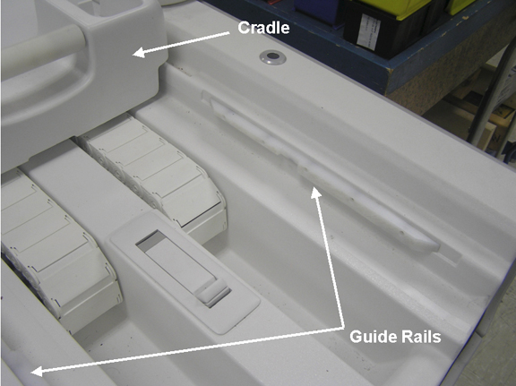
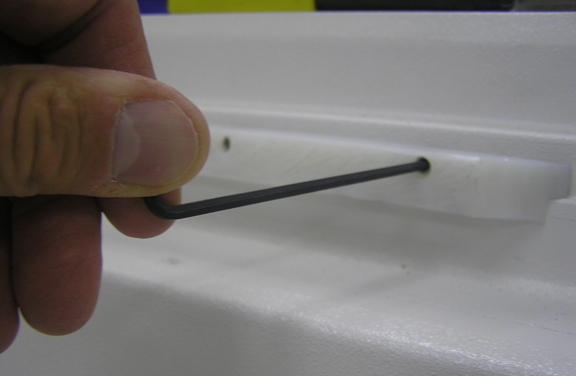
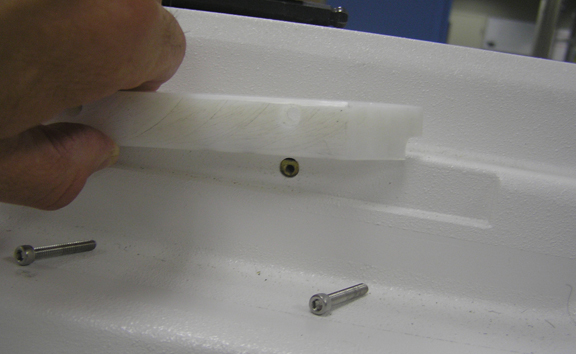
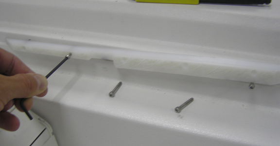
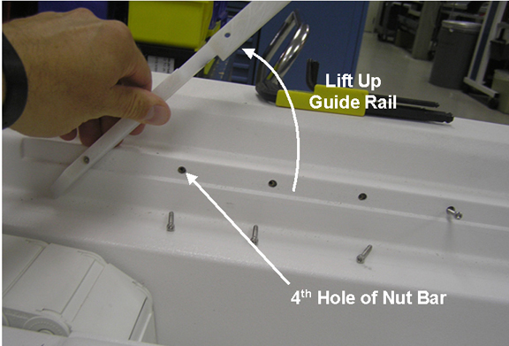
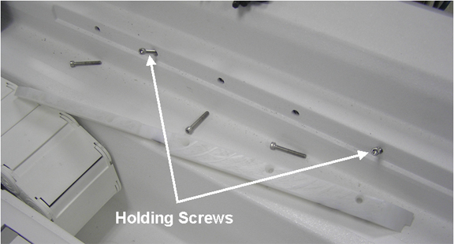
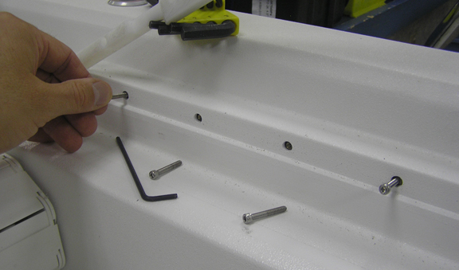

Operating Documentation
Direction 5670006, Rev# 1
Discovery MR750w GEM Service Methods
Module Version 3.0, Version Date 6/30/11
Operating Documentation |
| Required Persons | Preliminary Reqs | Procedure | Finalization |
|---|---|---|---|
| 1 | 30 mins |
| Item | Qty | Effectivity | Part# | Manufacturer | |
|---|---|---|---|---|---|
| Non-magnetic Tool kit | 1 | - | 5112581 | - | |
| Item | Qty | Effectivity | Part# | Manufacturer | |
|---|---|---|---|---|---|
| Guide Rail | 2 | - | - | - | |
| NOTE: | The guide rails (LH and RH) are used to guide the cradle when moving the cradle forward and backward on the table top. There are fives screws that secure each guide rail to the table top. A nut bar is provided for the screws to secure a guide rail to the table top. The nut bar is NOT secured to the table top. Installation of two screws during guide rail removal will prevent nut bar from dropping into the table top. Therefore, follow each step in this procedure to make sure bar nut does not drop into the table top during removal or installation. If nut bar drops into table top, the table top will need to be disassemble to retrieve nut bar. |
To obtain access to the guide rail, move the cradle back (into the magnet). (See Illustration 1.)
Illustration 1: Cradle in the Back Position

| NOTE: | Two screws in the narrow part of the guide rail should remain installed. |
Using a 7/64” Allen wrench, loosen each of the three screws and then remove them from the wide part of the guide rail. (See Illustration 2.)
Illustration 2: Screws in Wide Part of Guide rail

| NOTE: | The nut bar is NOT secured to the table top. Installation of screw will prevent nut bar from dropping into the table top. If nut bar drops into table top, the table top will need to be disassemble to retrieve nut bar. |
Lift up guide rail and install screw (approximately 3 or 4 turns) into the first screw hole of the nut bar. (See Illustration 3.)
Illustration 3: Screw Installed in First Hole of Nut Bar

Remove fourth screw from the narrow part of the guide rail. (See Illustration 4.)
Illustration 4: Location of Fourth Screw

Loosen fifth screw until approximately 1/4-inch of thread is exposed.
| NOTE: | The nut bar is NOT secured to the table top. Installation of screw will prevent nut bar from dropping into the table top. If nut bar drops into table top, the table top will need to be disassemble to retrieve nut bar. |
Lift up guide rail and install screw (approximately 3 or 4 turns) into the fourth screw hole of the nut bar. (See Illustration 5.)
Illustration 5: Screw Installed in Fourth Hole of Nut Bar

Remove fifth screw from the guide rail and guide rail from the table top.
| NOTE: | The nut bar will tilt down with the two screws installed. (See Illustration 6.) |
Illustration 6: Nut Bar with Two Screws Installed

| NOTE: | The guide rails (LH and RH) are used to guide the cradle when moving the cradle forward and backward on the table top. There are fives screws that secure reach guide rail to the table top. A nut bar is provided for the screws to secure a guide rail to the table top. The nut bar is NOT secured to the table top. Installation of two screws during guide rail removal will prevent nut bar from dropping into the table top. Therefore, follow each step in this procedure to make sure bar nut does not drop into the table top during removal or installation. If nut bar drops into table top, the table top will need to be disassemble to retrieve nut bar. |
Install screw, with guide rail (narrow end), into fifth hole of the nut bar. Do not tighten screw at this time.
Remove screw from fourth hole of the nut bar. (See Illustration 7.)
Illustration 7: Removing Holding Screw

Aligning the fourth of the guide rail with the fourth of the nut bar, install screw through the guide rail and into the nut bar. Do not tighten the screw at this time.
Illustration 8: Installing Screw in Forth Hold of Nut Bar
Install a screw through the third hole of the guide rail (wide end) and into the nut bar. Do not tighten the screw at this time.
Install a screw through the second hole of the guide rail (wide end) and into the nut bar. Do not tighten the screw at this time.
Remove screw from the first hole of the nut bar.
Install a screw through the first hole of the guide rail (wide end) and into the nut bar.
Using a 7/64” Allen wrench, tighten the five screws. (See Step .)
Illustration 9: Tighten Screws to Secure Guide rail

Adjust cradle guide rails. (See Cradle Guide Rail Latch Adjustment.)
No finalization steps.